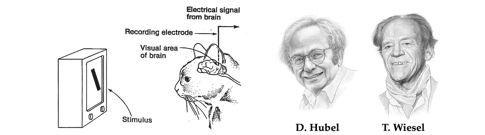
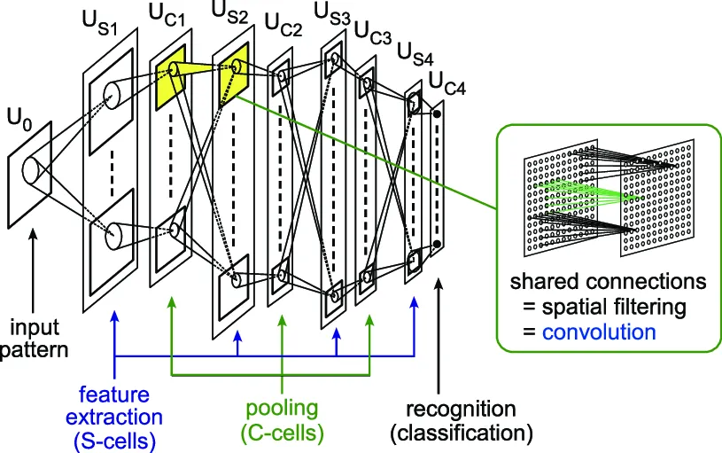
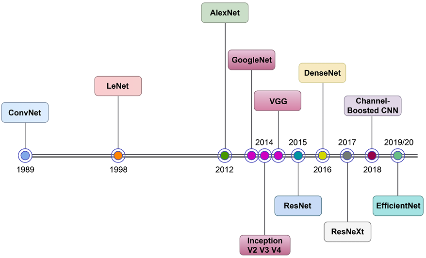
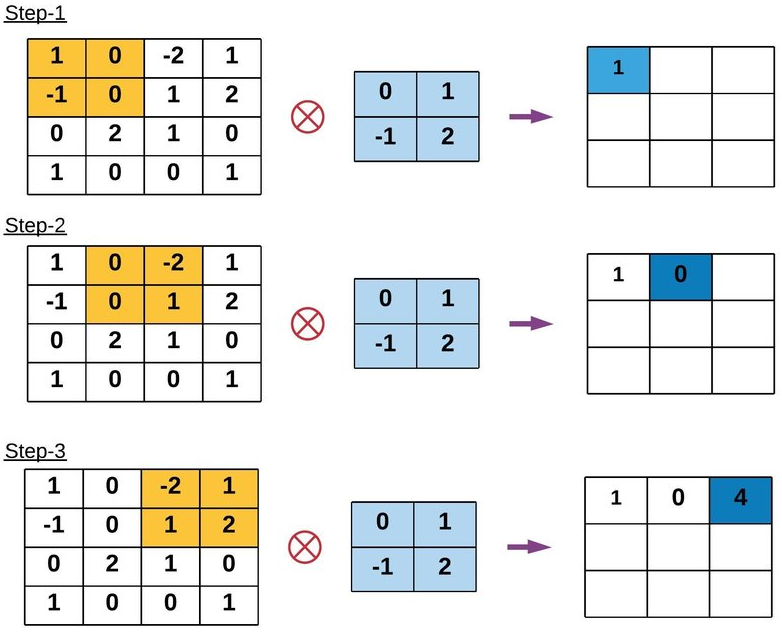
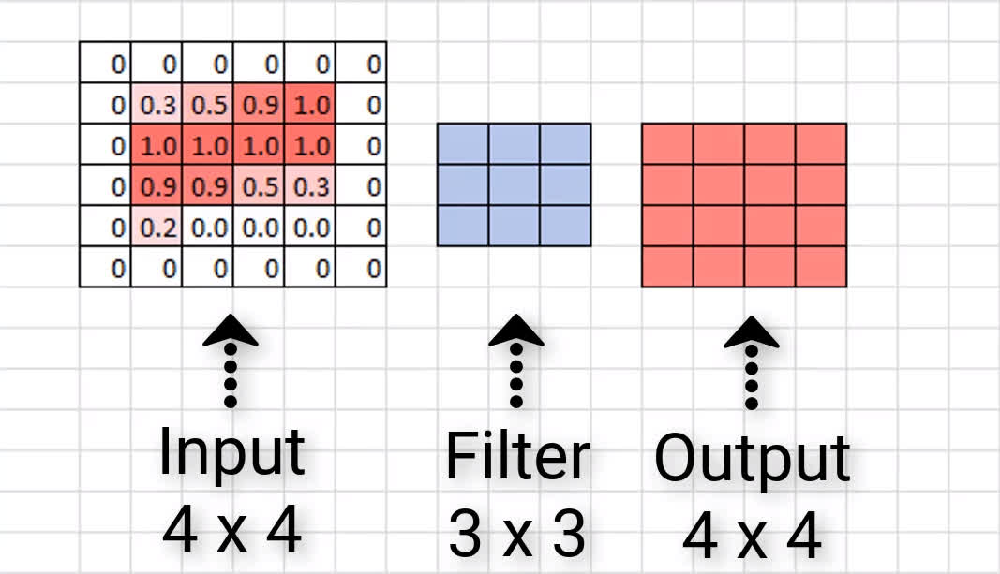
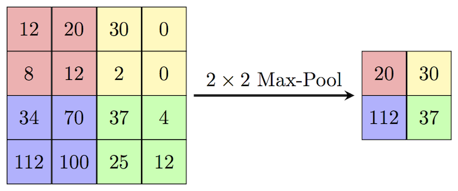
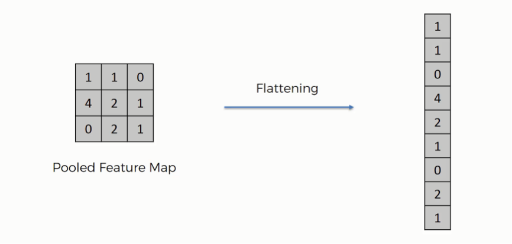
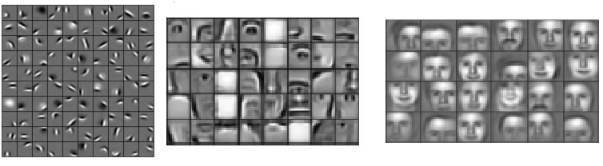
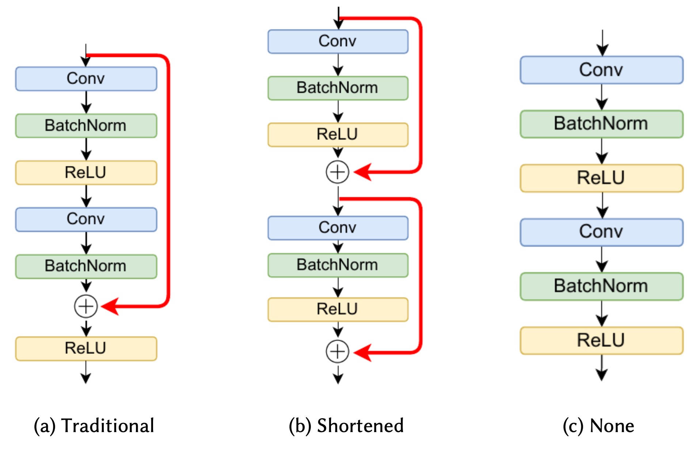
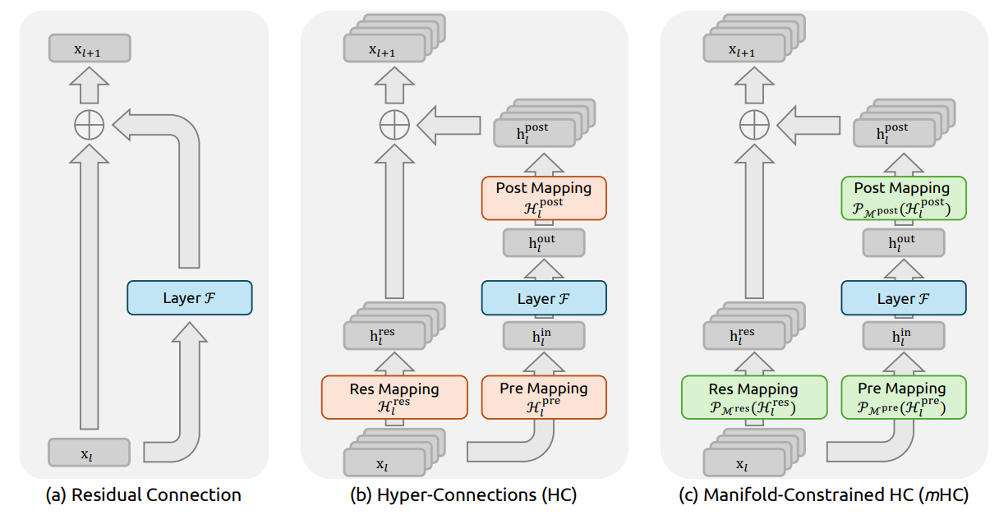

Introdução a Redes Neurais
Universidade Tecnológica Federal do Paraná, Cornélio Procópio (UTFPR-CP)
Universidade Tecnológica Federal do Paraná, Cornélio Procópio (UTFPR-CP)
May 7, 2026
A principal inspiração para as redes neurais surgiu de um experimento realizado em 1959 por David Hubel e Torsten Wiesel: Receptive Fields of Single Neurones in the Cat’s Striate Cortex.

O que foi descoberto nesse experimento?
Esse é exatamente o funcionamento de uma Rede Neural Convolucional
Primeira implementação de algo inspirado nesse experimento foi Neocognitron (1980) por Kunihiko Fukushima.

O ImageNet surgiu como um grande desafio de classificação de imagens, reunindo milhões de imagens distribuídas em inúmeras classes. Entre 1989 e 1998, Yann LeCun desenvolveu o LeNet, considerado a base das CNNs modernas. Até 2012, as taxas de erro na competição ainda eram elevadas. Nesse ano, uma CNN venceu o desafio pela primeira vez com ampla vantagem, marcando o início do domínio das CNNs nas edições seguintes.

Até agora, vimos os modelos mais simples de Redes Neurais, que são as MLP. Mas porque não utilizar elas para trabalhar com imagens ?
A grande diferença entre a MLP e a CNN é a introdução da camada convolucional. Essa camada foi projetada especificamente para lidar com dados espaciais, sendo responsável por aprender as features dos dados.
Na prática, ela aprende kernels, que funcionam como filtros de ativação aplicados à imagem.
\[Y = X \otimes K \quad \leftarrow \quad Y(i,j) = \sum_{m}\sum_{n} X(i+m, j+n) \cdot K(m,n)\]
Para facilitar o entendimento vamos ver como essa convolução funciona em um simples exemplo:

Os principais parâmetros de uma camada convolucional são:
Uma fórmula simples para identificar o tamanho da imagem resultante da convolução é: \[ TamResultante = \frac{TamEntrada - TamaKernel + (2*Padding)}{Stride} + 1 \]
Exemplo de padding: Nesse caso, temos uma matriz \(4 \times 4\) e um filtro \(3 \times 3\). Perceba que, se fôssemos aplicar normalmente a convolução, teríamos uma saída \(2 \times 2\). Ao adicionarmos o padding, temos o mesmo tamanho de entrada e saída.

Além da camada convolucional, existem outras duas camadas amplamente utilizadas em arquiteturas CNN: Pooling e Flatten.
De forma geral, o pipeline de uma arquitetura pode ser representado por:
\[Input \rightarrow n*(Conv,\ Activation,\ Pooling) \rightarrow Flatten \rightarrow Dense \rightarrow Output\]
O funcionamento dessa camada é relativamente simples. Ela define um bloco de tamanho específico que percorre a imagem, selecionando os maiores valores em cada região.
Os principais parâmetros dessa camada são:Tamanho do bloco: define a dimensão da região analisada e Stride: determina o tamanho do passo com que o bloco percorre a imagem.

Após o processamento pelos blocos convolucionais, a saída da rede ainda possui formato matricial. Como camadas densas não operam diretamente sobre dados bidimensionais, é necessário transformar essa representação em um vetor. Para isso, utiliza-se a camada Flatten.

As CNNs, assim como o reconhecimento visual humano, funcionam de forma hierárquica. Isso significa que as primeiras camadas aprendem padrões menos abstratos, enquanto representações mais complexas são aprendidas à medida que a profundidade da rede aumenta.
Por esse motivo, arquiteturas CNN utilizam múltiplos blocos convolucionais.

Outra propriedade que deixaram as CNNs famosas é a capacidade dalas de transferir aprendizado. Podemos pegar modelos que foram construidos em datasets massivos, como os listados abaixo, e usa-los em outros problemas. Aproveita o conhecimento adquirido até então de outra rede.
Residual Connections e Skip Connections foram criados para permitirem aprendizado de redes mais profundas.

Essas conexões possuem as seguintes características:
Até recentemente, os estudos sobre Hyper-Connections buscavam aumentar a flexibilidade de redes neurais por meio de conexões parametrizadas mais gerais. No entanto, essas abordagens frequentemente introduziam instabilidade numérica e dificuldades de convergência durante o treinamento. No início deste ano, o trabalho “mHC: Manifold-Constrained Hyper-Connections”, desenvolvido pelo grupo da DeepSeek, propôs uma solução mais robusta. A principal ideia é impor uma restrição geométrica às hiper-matrizes: em vez de serem arbitrárias, elas passam a pertencer a um espaço estruturado (manifold).
Mais especificamente, essas matrizes são restringidas ao Birkhoff Polytope: matrizes cujos elementos estão no intervalo entre \(0\) e \(1\), e em que a soma de cada linha e de cada coluna é igual a \(1\).

Curso Redes Neurais - Introdução | Lucas Otávio